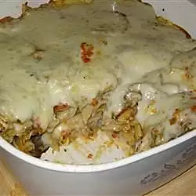

An easy cheesy casserole!
This bake is a recipe sourced from allrecipes.com. It uses makes a hearty meal that serves up to 8 people.
Ingredients
- 1 large eggplant, peeled and thinly sliced
- 0.5 pound dry penne pasta
- 1 large onion, chopped
- 1 red bell pepper, chopped
- 2 cloves garlic
- 1 ancho chile pepper, chopped (Optional)
- 2 tablespoons olive oil
- 6 tablespoons butter
- 6 tablespoons all-purpose flour
- 2 cups milk
- 1 (12 ounce) package vegetarian burger crumbles
- 1.5 cups shredded mozzarella cheese
Steps
-
Preheat oven to 375 degrees F (190 degrees C). Lightly oil a large, deep casserole dish. Bring a large pot of lightly salted water to a boil. Add pasta and cook for 8 to 10 minutes or until al dente; drain.
-
Arrange the sliced eggplant on a greased cookie sheet and bake in the preheated oven for 20 minutes.
-
In a food processor, puree the onion, bell pepper, garlic and optional ancho chile pepper. If the mixture is too thick add a tablespoon of water. In a large skillet, heat the oil over medium heat. Pour the onion mixture into the pan and cook, stirring occasionally, for 10 minutes or until the liquid has evaporated and the mixture has thickened. Remove from the heat and set aside.
-
In a medium saucepan, melt butter over low heat. Stir in flour until smooth. Add milk, stirring until smooth. Remove from heat.
-
Arrange half of the baked eggplant in the greased casserole dish. Spoon in half of the white sauce, covering the eggplant. Spread the veggie crumbles over the white sauce, followed by the pasta, and a layer of the bell pepper puree. Cover the the onion and pepper mixture with remaining eggplant and spoon the remaining white sauce over the eggplant. Sprinkle the mozzarella cheese over the casserole.
-
Bake uncovered in the preheated oven for 35 minutes. Let stand 10 minutes before serving.